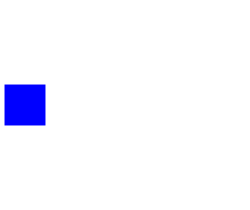

The SPICE3 package uses the Modelica.Electrical.Analog interfaces. Only special partial models used in the SPICE3 package are located in this Interfaces package.
| Name | Description |
|---|---|
| TwoPortControlledSources | Component with two electrical ports, including current |
| Pin to couple inductances via K, which gets the value of inductance | |
| Pin to couple inductances via K, which sets the value of inductance | |
|  ConditionalSubstrate | Partial model to include a conditional substrate node |